Fixed variable (except No Ih):
gbar_h = 3e-5 (S/cm2)
e_pas was adjusted so the resting membrane potential is -65 mV.
| No Ih | Sonia's Model | Sonia's Model 2 | Payne's (C<->O) model | Payne's (C<->O)2 model | Altomare's Model | Modefied Altomare's Model 1 | Modefied Altomare's Model 2 | Modefied Altomare's Model 3 | |
| Tutorial # | 13 | 13.a | 14 | 16 | 17 | 18 | 18 | 18 | |
| e_pas (mV) | -65 | -68.8 | -68.8 | -68.0 | -69.0 | -78.5 | -67.1 | -67.1 | -66.9 |
| Membrane Time Constant (ms) | 30.01 | 25.10 | 25.48 | 25.66 | 24.04 | 20.94 | 28.53 | 28.27 | 27.45 |
| Rin (M Ohm) | 95.49 | 63.07 | 63.07 | 65.7 | 58.2 | 42.8 | 66.8 | 66.8 | 68.42 |
| Rebound Slope (mV/mV) | 0.0 | -0.12 | -0.14 | -0.12 | -0.12 | -0.19 | -0.25 | -0.22 | -0.15 |
| Temporal Summation (%) | 43.68 | 17.16 | 16.73 | 20.35 | 12.52 | -4.57 | 21.43 | 21.54 | 24.08 |
| Depolarizing Resonance Frequency (Hz) | 0.6 | 0.6 | 2.8 | 0.6 | 0.7 | 5.3 | 2.7 | 0.6 | 0.6 |
| Hyperpolarizing Resonance Frequency (Hz) | 1.1 | 3.9 | 3.8 | 3.7 | 4.7 | 5.7 | 3.2 | 3.5 | 3.6 |
| Vhalf (mV) | -81.0 | -81.0 | -81.3 | -79.4 | -68.9 | -80.5 | -80.4 | -80.9 | |
| k (mV) | 7.8 | 7.8 | 7.3 | 8.3 | 9.4 | 6.5 | 6.5 | 6.5 | |
| tau = 45 (ms) | delta_0 = 80 | gamma_0 = 0.2619 |
| No Ih | Sonia's Model | Sonia's Model 2 | Payne's (C<->O) model | Payne's (C<->O)2 model | Altomare's Model | Modefied Altomare's Model 1 | Modefied Altomare's Model 2 | Modefied Altomare's Model 3 | |
| Tutorial # | 13 | 13.a | 14 | 16 | 17 | 18 | 18 | 18 | |
| Impedance Magnitude | 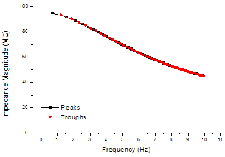 | 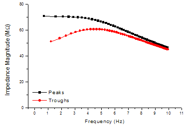 | 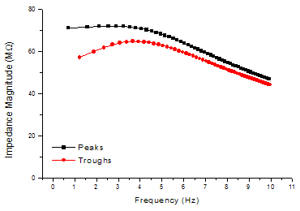 | 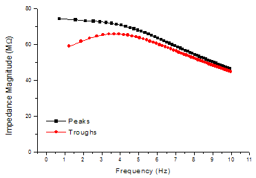 | 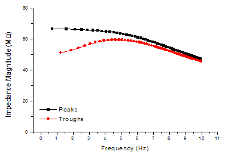 | 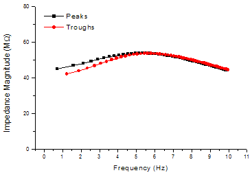 | 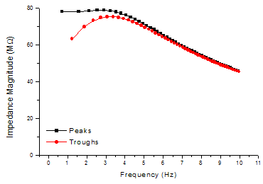 | 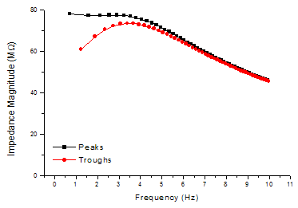 | 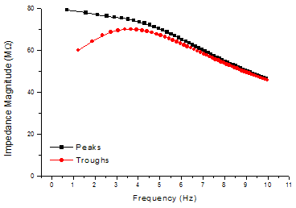 |
| Voltage Lag | 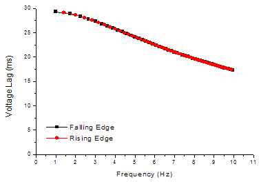 | 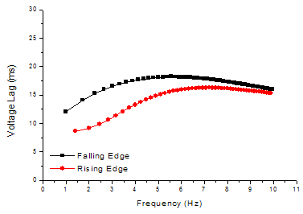 | 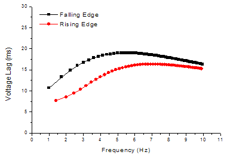 | 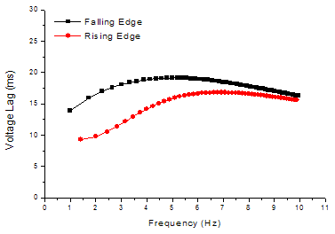 | 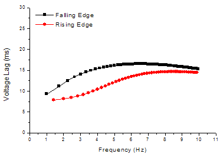 | 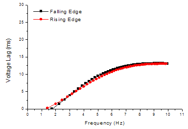 | 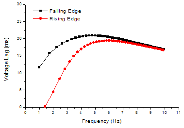 | 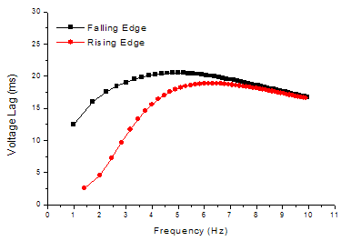 | 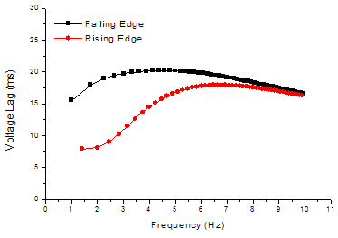 |
| Time Constant | 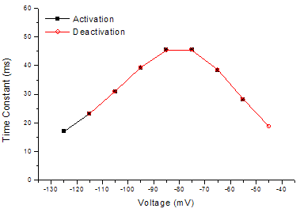 | 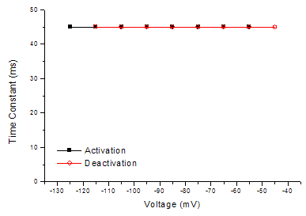 | 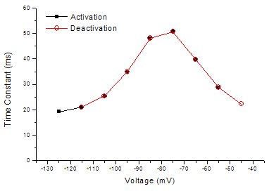 | 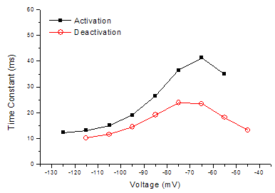 | 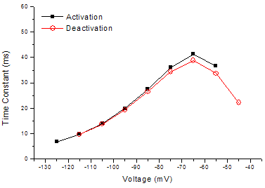 | 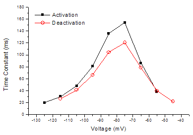 | 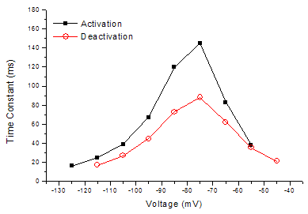 | 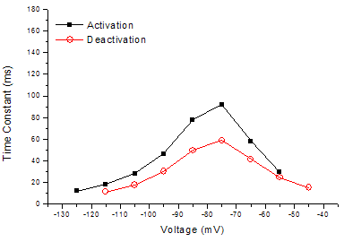 | |
| tau = 45 (ms) | delta_0 = 80 | gamma_0 = 0.2619 |
Fixed variable:
gbar_h = 5e-5 (S/cm2)
e_pas is adjusted so the resting membrane potential is -65 mV.
| Sonia's Model | Payne's (C<->O) model | Payne's (C<->O)2 model | Altomare's Model | Modefied Altomare's Model | Modefied Altomare's Model 2 | |
| Tutorial # | 13 | 14 | 16 | 17 | 18 | 18 |
| e_pas (mV) | -71.3 | -70 | -71.7 | -87.5 | -68.5 | -68.5 |
| Membrane Time Constant (ms) | 23.5 | 24.3 | 22.5 | 18.1 | 28.0 | 27.7 |
| Rin (M Ohm) | 51.7 | 54.9 | 46.1 | 31.1 | 56.5 | 56.5 |
| Rebound Slope (mV/mV) | -0.21 | -0.21 | -0.22 | -0.32 | -0.39 | -0.35 |
| Temporal Summation (%) | 5.60 | 9.25 | 0.27 | -13.9 | 9.50 | 9.76 |
| Depolarizing Resonance Frequency (Hz) | 4.3 | 3.8 | 5.3 | 6.9 | 3.6 | 3.8 |
| Hyperpolarizing Resonance Frequency (Hz) | 5 | 4.7 | 6 | 7.1 | 3.9 | 4.1 |
| Vhalf (mV) | -81.1 | -81.4 | -79.7 | -69.0 | -80.7 | -80.5 |
| k (mV) | 7.9 | 7.4 | 8.5 | 9.5 | 6.6 | 6.6 |
| delta_0 = 80 |
Fixed variable:
e_pas = -70 (mV)
gbar_h is adjusted so the resting membrane potential is -65 mV.
| Sonia's Model | Payne's (C<->O) model | Payne's (C<->O)2 model | Altomare's Model | Modefied Altomare's Model | Modefied Altomare's Model 2 | |
| Tutorial # | 13 | 14 | 16 | 17 | 18 | 18 |
| gbar_h (S/cm2) | 4e-5 | 5e-5 | 3.7e-5 | 1.1e-5 | 7.2e-5 | 7.1e-5 |
| Membrane Time Constant (ms) | 24.3 | 24.3 | 23.4 | 24.9 | 27.4 | 27.1 |
| Rin (M Ohm) | 56.9 | 54.9 | 53.3 | 66.0 | 48.3 | 48.4 |
| Rebound Slope (mV/mV) | -0.17 | -0.21 | -0.15 | -0.05 | -0.52 | -0.47 |
| Temporal Summation (%) | 11.0 | 9.2 | 7.5 | 16.9 | -0.98 | -0.19 |
| Depolarizing Resonance Frequency (Hz) | 3.5 | 3.8 | 3.5 | 2.3 | 4.2 | 4.6 |
| Hyperpolarizing Resonance Frequency (Hz) | 4.5 | 4.7 | 5.2 | 3.3 | 4.4 | 4.7 |
| Vhalf (mV) | -81.1 | -81.4 | -79.7 | -69.0 | -80.7 | -80.5 |
| k (mV) | 7.9 | 7.4 | 8.5 | 9.5 | 6.6 | 6.6 |